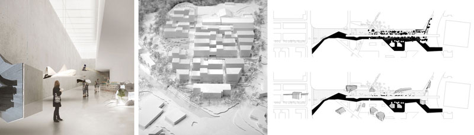

AWP: Part I experience
Year out as Part I Architect spent in the Parisian firm AWP. Worked in a variety of project at different scales: from multi-purpose masterplan in Switserland, to urban furniture design in the Parisian business quarter of La Defense. Hard team worker, responsible of model making and computer drawings.
Project credits of AWP

XXL. Guide Plan to the Open Spaces of the City of Nanterre, France
Urban study on the city open spaces: what are they and how can we revive them?
XL. 85 100 sqm. Orèe de Crissier, Switzerland
Private client, masterplan and construction of housing, commercial blocks and open spaces.
L. 71 044 sqm. Jardin de l'Arche, La Dèfense, France
Public and Private client, complex mix of urbanism, architecture and landscape design. Regeneration project of the parisian business centre of La Dèfense, including a ramp over the new infrastructure system and a series of small buildings with public aim.
M. 16 000 sqm. Hungarian Museum of Architecture, Budapest, Hungary
Budapest liget international competition.
S. 230 sqm. Armenonville, Neuilly sur Seine, France.
Private client, apartment renovation of two top floors in the north of Paris.
XS. Urban Furniture, La Dèfense, France.
Public client, part of the project of 'Jardin de l'Arche'.